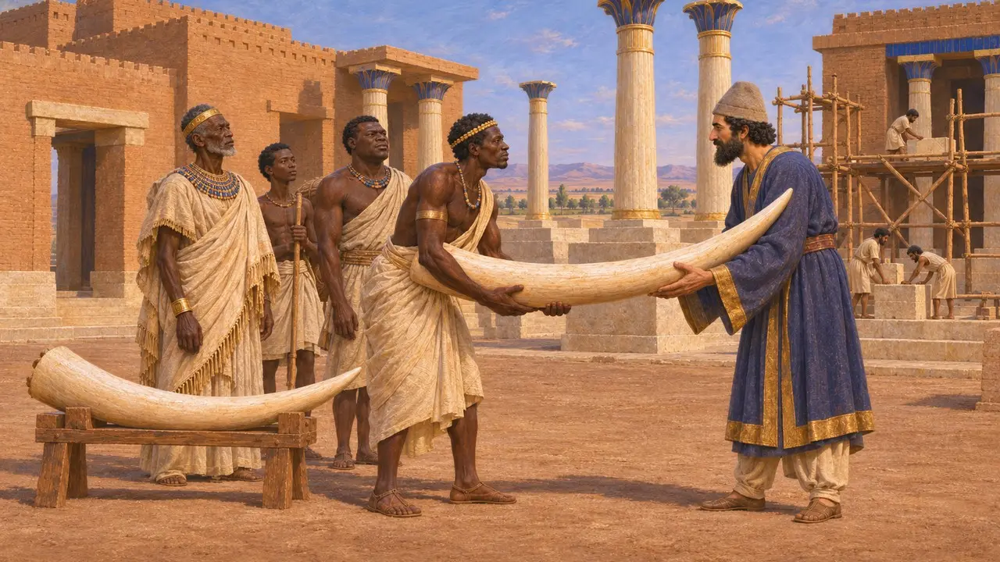
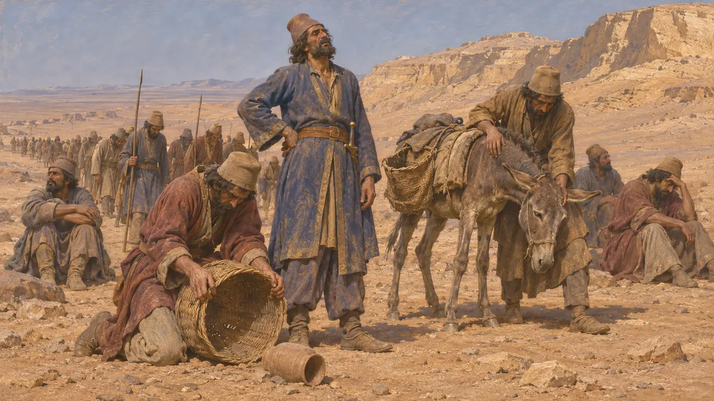
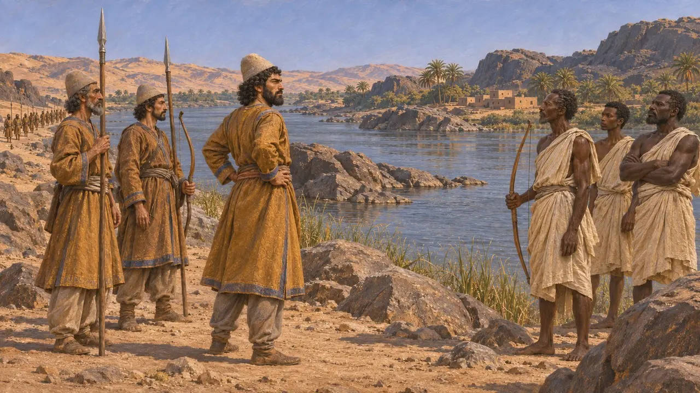
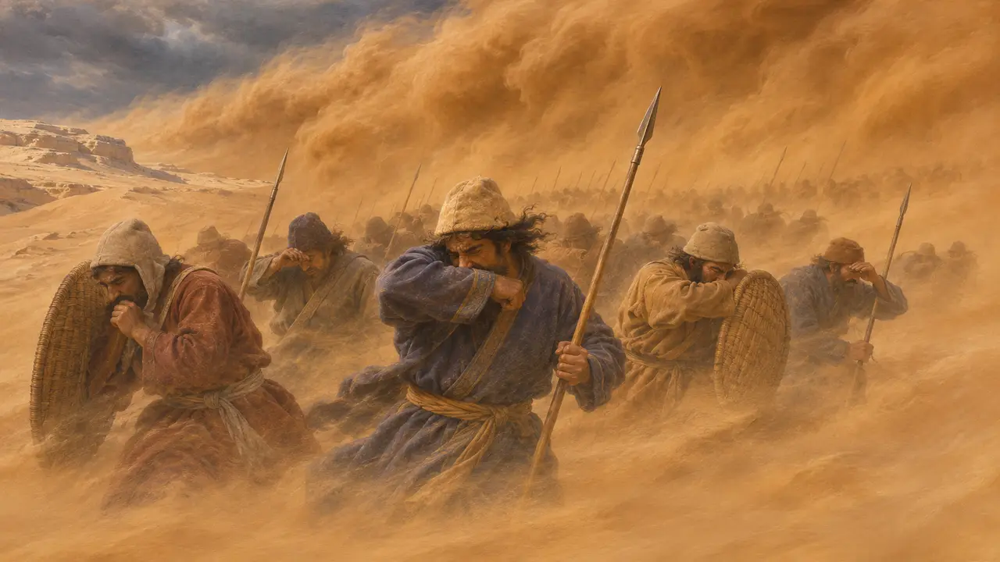
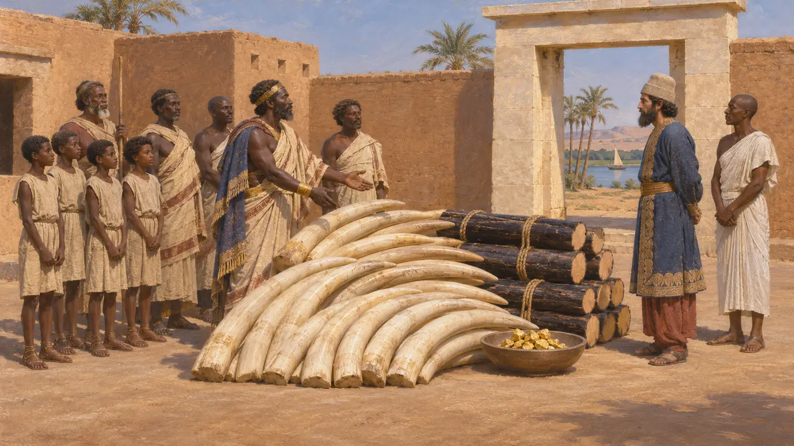
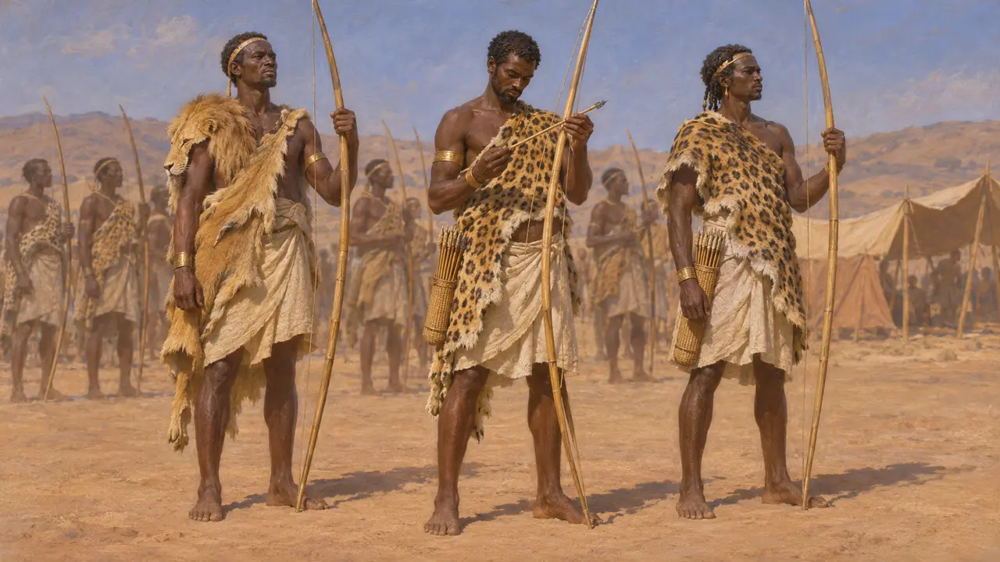

希腊作家把埃及以南的民族称为埃塞俄比亚人。在波斯王室文献中，这片土地叫库施，位于埃及上游的尼罗河畔。冈比西斯攻取埃及后曾向那里进军，后来的波斯诸王把库施列为自己的属地之一，也是象牙的来源。
游戏中： 游戏在编年史、诏令和战役说明中提到埃塞俄比亚人，涉及南征以及有关象牙的文字。除这些文字所呈现的内容外，他们没有独立的游戏机制。

波斯铭文中的库施
见于史载库施出现在大流士和薛西斯王室铭文所列的属地之中。大流士在苏萨的建城铭文说，宫殿所用的象牙来自库施、印度和阿拉霍西亚。这些文献表明波斯人把库施算作自己世界的一部分，但并未记述任何征服。
DSf

冈比西斯南征
古代记述希罗多德说，冈比西斯在埃及之后筹划了三项远征：攻打迦太基、攻打阿蒙人、攻打长寿的埃塞俄比亚人。他先派探子携礼前往，埃塞俄比亚国王回赠一张弓和一番嘲讽之辞。希罗多德说，冈比西斯盛怒之下粮草不足便出兵，饥饿迫使军队先吃驮畜，后来抽签吃人，他这才回师。
Herodotus 3.17-25

南征的结果
争夺中希罗多德把这场远征写成一个疯王的蠢行。现代史家对这一描绘存疑，因为关于冈比西斯的传统对他怀有敌意。他究竟走了多远，此后波斯在南方掌控了多少，都不清楚。后来的波斯文献把库施列为属地，却没有说明这在实际中意味着什么。
P. Briant, From Cyrus to Alexander, 2002

阿蒙失踪的军队
古代记述希罗多德说，派去攻打阿蒙人的军队从埃及底比斯出发，消失在沙漠中。他转述阿蒙人自己的说法：一阵南风把军队埋在了沙下。在他的叙述里，进军阿蒙和进军库施是两项不同的远征。
Herodotus 3.25-26

象牙与乌木之礼
古代记述希罗多德说，与埃及相邻的埃塞俄比亚人不缴定额贡赋，而是每两年献礼一次。他列出了未经提炼的黄金、乌木原木、五名埃塞俄比亚男孩和二十根大象牙。他笔下身材高大、容貌俊美、极为长寿的人，反映的是希腊人对遥远南方的想象，不应当作民族志来读。
Herodotus 3.97

薛西斯军中的埃塞俄比亚人
古代记述希罗多德把埃塞俄比亚人列入薛西斯为进攻希腊而集结的军队之中，他们身披豹皮和狮皮，使用棕榈叶柄制成的长弓和石镞箭作战。他把他们与在印度人身边服役的东方埃塞俄比亚人区分开来。他的军队名录是一份文学性的清单，其细节无法用波斯档案核实。
Herodotus 7.69-70
来源
- Herodotus 3.17-26
- Herodotus 3.97
- Herodotus 7.69-70
- DSf
- P. Briant, From Cyrus to Alexander, 2002